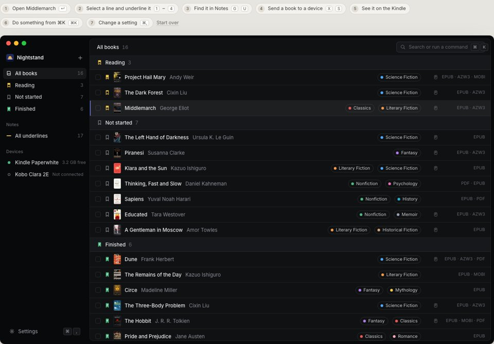
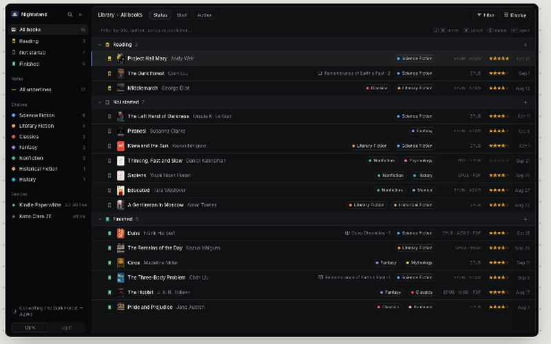
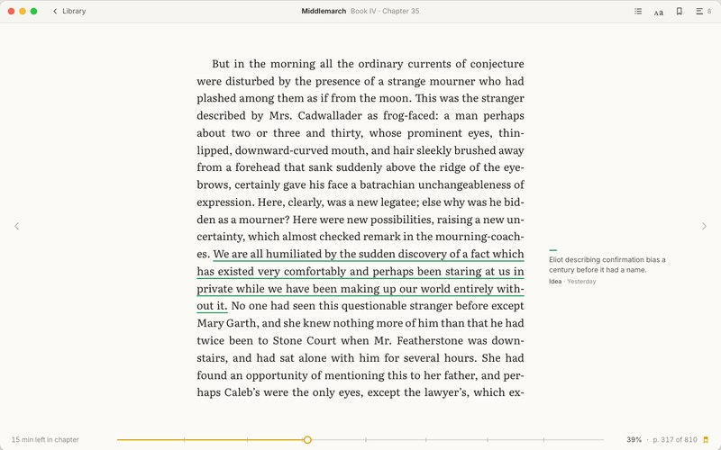
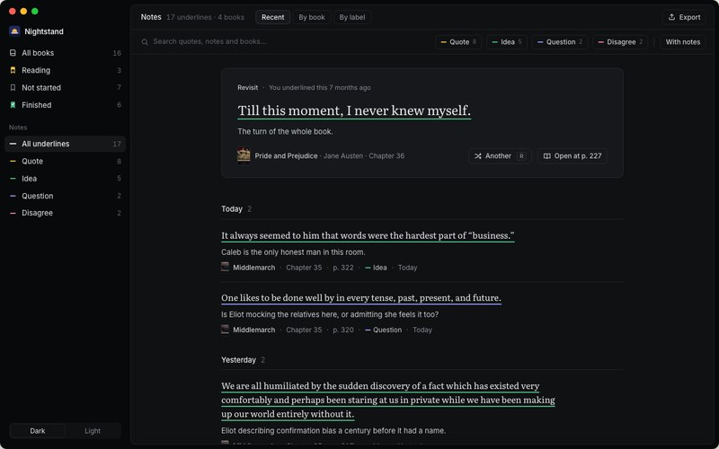
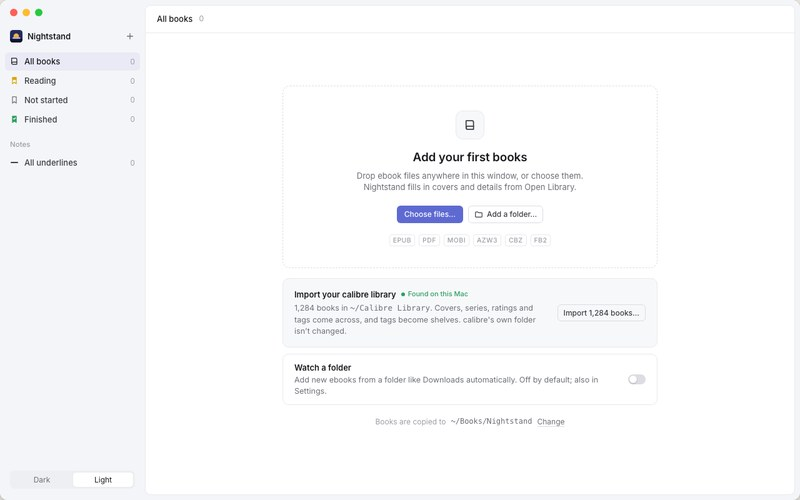
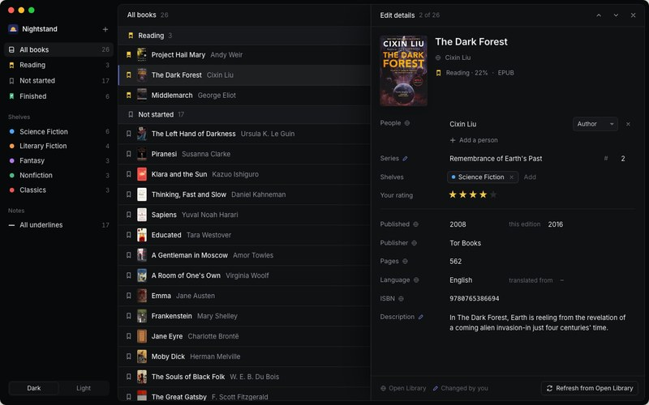
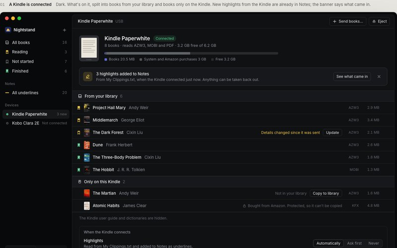
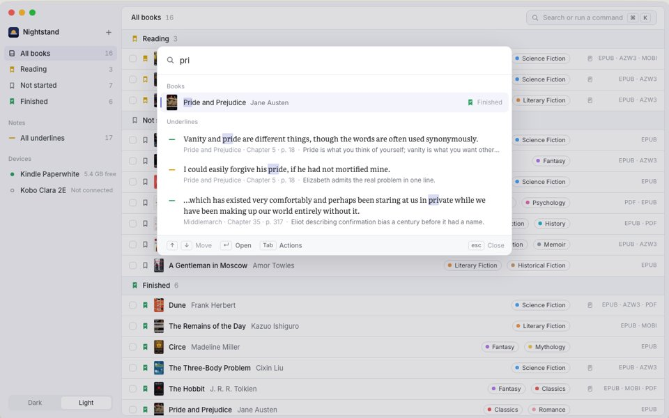
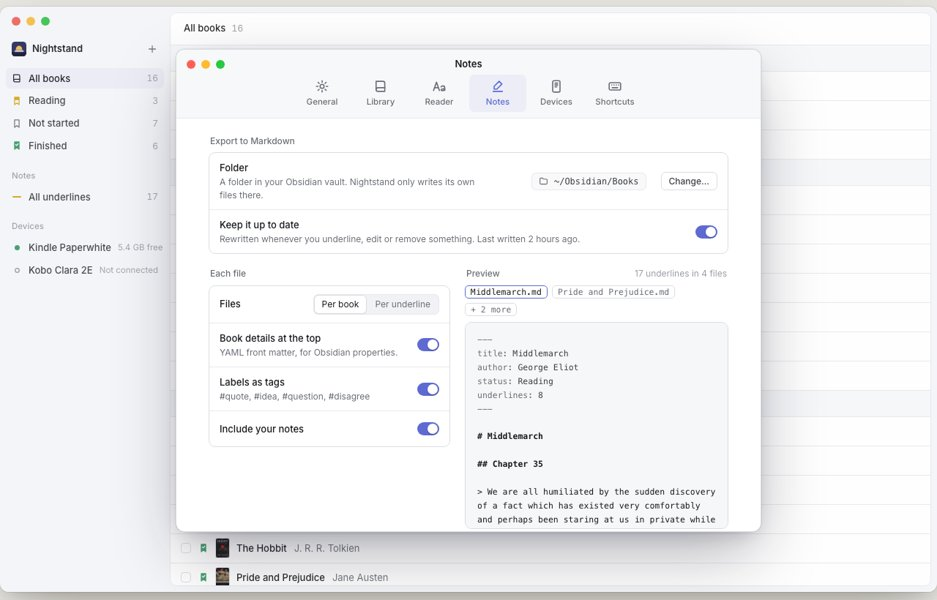
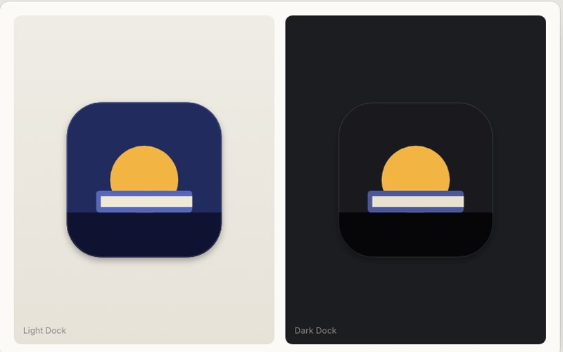

A desktop app for the books on your own disk: a library grouped by reading status, a reader where underlining is the main action, and Notes that bring back the lines you kept. Everything is local, with book data from Open Library.

Every screen in one working window, sharing the same books and underlines. A seven-step path ticks off as you go: open a book, underline, find it in Notes, send to the Kindle, ⌘K, Settings.

Books grouped by status, with shelves, a peek panel and keyboard navigation. Dark and light.

Pages layout by default. Select a passage to underline it as a Quote, Idea, Question or Disagree.

Every underline in one place. Revisit brings back an older passage each time, and export writes Markdown for Obsidian.

Drop files anywhere. They're copied into the library and matched on Open Library; only the ones that need a decision ask for one.

A panel beside the library. Each field shows where its value came from, and refreshing never overwrites your changes without asking.

Send books to a Kindle or Kobo in a format it reads, and bring back highlights and reading progress for review.

⌘K from anywhere finds books, underlines and commands. It starts from where you are, and Tab on a book lists its actions.

A separate window opened with ⌘,. Six tabs, changes apply straight away, and previews show the page and the exported file.

The mark, app icon, Literata wordmark, colour, type and voice.